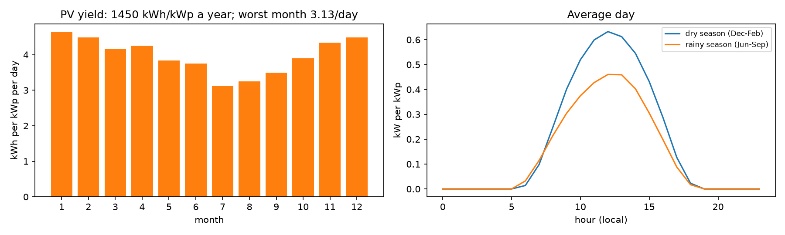
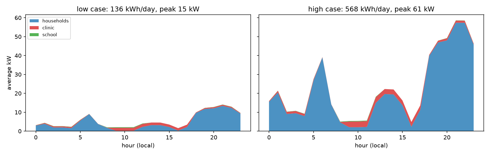
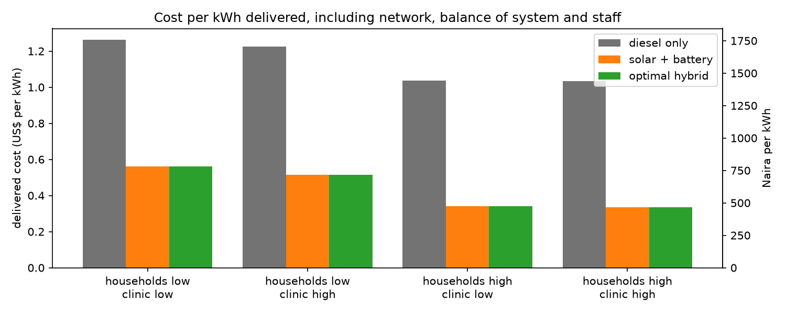
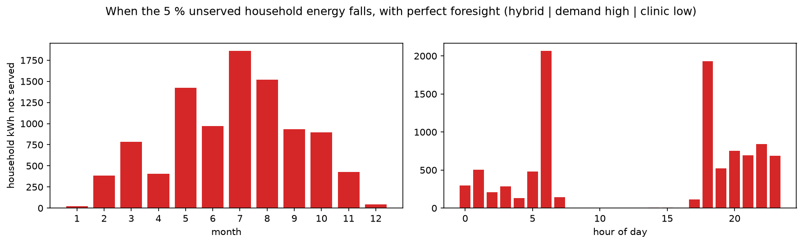
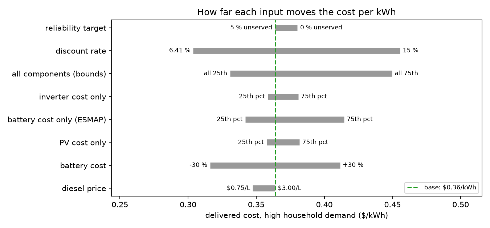

Abstract—Off-grid villages in Nigeria rely largely on small petrol and diesel generators, and diesel delivered to a village in Cross River State now costs about US$2.7 per litre. This study sizes a mini-grid for one village cluster in Umon South, Biase LGA (312 customers, a primary health centre and a primary school) using only public data: a rural-electrification cluster dataset, the World Bank Multi-Tier Framework survey for bottom-up demand modelled with RAMP, a PVGIS typical meteorological year and ESMAP cost benchmarks. A linear capacity-expansion model in PyPSA chooses PV, lithium-ion battery, inverter and diesel capacity over 8,760 hours, with the health centre and school always supplied and household shortfall capped at 5 % of annual household energy. Because the optimisation has perfect foresight, each design is also operated with a rule-based dispatch. At the current diesel price the least-cost system has no main generator: 209–217 kWp of PV and 558–565 kWh of storage deliver electricity at US$0.34/kWh in the high-demand case, against US$1.03–1.26/kWh for diesel only. Operated without foresight, the same system would interrupt the health centre and school for 339 hours a year (high-demand case); a 3–5 kW backup generator reserved for them removes these interruptions for 60–100 litres of diesel a year. Above about US$1.50/L no main generator is built at all, and the cost of energy is then more sensitive to equipment prices (US$0.31–0.43/kWh across ESMAP’s interquartile range) and to demand growth than to the diesel price.
Index Terms—Rural electrification, mini-grid, capacity expansion, energy storage, photovoltaic systems, diesel generator, PyPSA, sensitivity analysis, Nigeria.
I. Introduction
Many Nigerian villages far from the national grid obtain electricity from small petrol and diesel generators, paying whatever the fuel costs by the time it reaches them. In Cross River State the average retail price of diesel was about ₦3,390 per litre in May 2026 [1], before transport to a village. Solar PV mini-grids with battery storage are the main alternative, and the planning question for each site is quantitative: how much PV, how much storage, and whether a diesel generator is still worth installing.
This study answers that question for one real village cluster and asks how far the answer holds. It makes three contributions. First, it builds a reproducible least-cost design entirely from public data and open-source tools, with every cost and assumption traced to a source. Second, it checks the optimised design under a rule-based, no-foresight dispatch, and shows that the perfect foresight of the optimisation hides several hundred hours a year of supply interruptions at the health centre and school; it sizes a small backup generator that removes them. Third, it maps how the least-cost design and cost of energy respond to the diesel price, equipment costs, the reliability target and demand growth.
Section II reviews related studies. Section III describes the site and data, Section IV the model, and Sections V and VI the results and sensitivity analysis. Section VII discusses limitations and Section VIII concludes.
II. Related Work
Most techno-economic studies of off-grid hybrid systems in Nigeria use HOMER [2]. Olatomiwa et al. [3] compared hybrid systems for rural communities in each of Nigeria’s six geo-political zones and found PV–diesel–battery systems to be the most economic, testing diesel prices of US$1.1 and 1.3/L. Esan et al. [4] designed a PV–diesel–battery system for Lade II in Kwara State (about 2.7 MWh/day) and assessed its reliability with a capacity outage probability table; with diesel at US$0.6/L the optimum combined 1.5 MW of PV with a 350 kW generator, at US$0.396/kWh. Ndukwe et al. [5] sized a hybrid system for Umuokpo Amumara in eastern Nigeria. Lewis et al. [6] studied a village in north-east Nigeria with about 610 kWh/day of demand and found a 99 % renewable system (375 kW PV, 869 kWh lead-acid storage, 15 kW generator) at US$0.093/kWh with diesel at US$1/L, varied from US$0.40 to 2.50/L. Rural health facilities, whose loads are critical, have been studied separately [7], [8].
Two points motivate the present study. First, most of these studies assume diesel prices of US$0.6–1.3/L, well below the current delivered price in Cross River, so their conclusions about the role of diesel may not carry over. Second, HOMER evaluates each candidate system with rule-based dispatch strategies [2], whereas open linear-programming capacity models such as PyPSA [9] optimise capacity and hourly dispatch together over a whole year. The linear-programming approach is transparent and scriptable, but its dispatch has perfect foresight of demand and weather. This study uses such a model and then operates the resulting design with a rule-based dispatch to measure the effect of that foresight.
III. Site and Data
A. Site
The site is cluster 10645 of the Reiner Lemoine Institut (RLI) and GIZ rural-electrification dataset for Cross River State [10], in Umon South ward, Biase LGA (5.36° N, 8.05° E). The dataset lists 312 customers and a primary health centre and primary school, with no grid connection. It also gives RLI’s own design for the cluster (96 kWp of PV, 168 kWh of storage and a 77 kW generator), made under assumptions that are not published with the data.
B. Solar resource
Hourly global horizontal irradiance G and air temperature Ta come from the PVGIS 5.3 typical meteorological year (SARAH3, 2005–2023) [11], [12]. PVGIS reports instantaneous values at the start of each UTC hour; the hourly mean is taken as the average of consecutive values and shifted to local time (UTC+1). At 5° N a near-horizontal array receives almost the same annual energy as a horizontal surface, so G is used as plane-of-array irradiance. PV output per kWp is
with temperature coefficient γ = −0.4 %/°C, NOCT = 45 °C and system losses λ = 14 % (the PVGIS default). The annual yield is 1,450 kWh/kWp, falling from about 4.6 kWh/kWp/day in January to 3.1 in July, the core of the rainy season (Fig. 1).

C. Demand
Household demand is built bottom-up with RAMP [13], a stochastic model that generates load profiles from appliance ownership, power ratings, daily hours of use and usage windows. Appliance counts and hours come from the World Bank Multi-Tier Framework (MTF) household survey of Nigeria (2018) [14], [15], with survey weights. The survey covers only the North-West, so households in Cross River are assumed to use electricity in the same way. Two cases bracket the uncertainty: low, households resembling the average rural survey household (most not yet electrified), and high, households resembling rural households already connected to the grid. Ratings not reported in the survey are taken from RAMP examples, the Lighting Global design tool [16] or nameplate values. Usage windows are the author’s assumptions, widened where needed to fit the hours reported in the survey; appliance energy is fixed at count × rating × hours, so RAMP varies only the timing.
The school load (2.4 kWh/day; closed in August and for two weeks at Christmas and Easter) follows the Lighting Global design for a Nigerian basic school [16]. The health centre is modelled twice: 18.8 kWh/day from the Lighting Global full primary-health-centre design [16], and 36 kWh/day for a Type 2 primary health centre in the SEforALL Nigeria healthcare roadmap [17]. The four resulting demand cases are summarised in Table I; the evening household peak at 21:00–22:00 occurs well after sunset (Fig. 2).
| Load | Low | High |
|---|---|---|
| 312 households (kWh/day) | 114.7 | 529.7 |
| Health centre (kWh/day) | 18.8 | 36.0 |
| School (kWh/day) | 2.4 | 2.4 |
| Village total (kWh/day) | 135.9–153.1 | 550.9–568.2 |
| Annual peak (kW) | 15.5–16.0 | 60.6–61.4 |

D. Costs
Equipment costs are the medians of ESMAP’s 2022 mini-grid cost survey [18], with its 25th and 75th percentiles used in the sensitivity analysis; generator cost and lifetimes follow Esan et al. [4] (Table II). The diesel price is the Cross River state average [1] plus a 10 % surcharge for transport to the village (author’s assumption), giving US$2.68/L at the Central Bank of Nigeria rate of ₦1,391.75 per US$ on 25 November 2026 [19]. Fuel use is 0.33 L/kWh, the HOMER linear fuel curve [2] evaluated at half load. All investments are annualised with the capital recovery factor
at a real discount rate r = 10 % over component life L, without salvage value. Distribution and metering (US$250 per customer), balance of system (US$524 per kW of peak demand; ESMAP does not state the unit basis, so this is an assumption) and staff (US$5,100/yr) do not depend on the generation mix and are added after the optimisation.
| Item | Value | Annualised | Source |
|---|---|---|---|
| PV incl. PV inverter, 25 yr | $441/kWp | $58.6/kWp | [18] |
| Li-ion battery, 10 yr | $314/kWh | $51.1/kWh | [18], [4] |
| Battery inverter, 10 yr | $415/kW | $77.5/kW | [18] |
| Diesel generator, 20 yr | $172/kW | $20.2/kW | [4] |
| Generator energy (fuel, O&M, wear) | $0.937/kWh | [1], [2], [18], [4] | |
| Battery: cycles, DoD, round trip | 3,000; 80 %; 90 % | [18] | |
| Distribution and meters | $250/cust. | $9,162/yr | [18] |
IV. Method
A. Optimisation model
The mini-grid is modelled in PyPSA [9] as a single AC bus with hourly resolution over one year (t = 1,…,8760) and solved as a linear program with HiGHS [20]. The decision variables are the PV capacity Ppv, battery energy capacity E, inverter rating Pinv and generator rating Pg, and the hourly PV output ptpv, generator output ptg, battery charge ct and discharge dt, state of energy et and unserved household demand ut. The objective is the annual cost
where Xk are the four capacities, ak their annualised costs (Table II), mg the generator energy cost and ε = US$0.01/kWh a small tie-breaking cost on unserved energy. The constraints are
with one-way efficiency η = √0.9, depth of discharge δ = 0.8 and household shortfall cap σ = 5 %. A single bidirectional inverter is enforced by an added constraint that the charge and discharge ratings are equal. Critical loads Dcr (health centre and school) have no unserved variable and are therefore always supplied. The generator is linear, with no minimum load; this is a simplification.
B. Cases and verification
Three designs are solved for each of the four demand cases: diesel only (Ppv = E = 0), PV and battery (Pg = 0), and a hybrid in which all four capacities are free, giving 12 optimisations. Each solution is checked outside the solver: the hourly energy balance (5) holds to within 0.1 % of peak demand, the battery stays within its limits, and the annual cost recomputed from the capacities and hourly flows matches the solver objective to within 10−4.
C. Battery wear
The battery is annualised over a 10-year calendar life, but heavy cycling may end its life sooner. After each run the equivalent full cycles per year N = ∑t ηdt / (δE) give a life Lb = min(10, 3000/N) years, and the extra annual cost E Cb[CRF(r, Lb) − CRF(r, 10)] is added to the cost of energy. This correction is applied after the optimisation and does not change the design.
D. No-foresight operation
The linear program optimises dispatch over the whole year at once and therefore knows the weather in advance. To test what an operator without a forecast would achieve, each design is also simulated hour by hour with a simple rule: PV serves the load first and its surplus charges the battery within the inverter rating; a deficit is met from the battery down to its 20 % floor, then from the generator; any remaining shortfall is cut from households first and from the critical loads only as a last resort. The simulation starts with a full battery. Two remedies for critical-load interruptions are compared: a battery reserve that households may not use, and a backup generator that supplies only the critical loads, sized to their annual peak rounded up to the next kW (3 kW or 5 kW).
E. Cost of energy
For the final design the delivered cost of energy is
where Pbk is the backup generator rating and generator energy Wg and served energy Wserved come from the rule-based simulation, not from the optimisation.
F. Sensitivity analysis
One input is varied at a time for both household cases (with the low health-centre case), re-optimising the hybrid design and re-running the rule with the backup generator at each point: delivered diesel price US$0.50–3.00/L (eight values); battery cost ±30 %; all three ESMAP equipment costs at their 25th and 75th percentiles; the household shortfall cap at 0, 1 and 5 %; and demand growth of 5 % a year for five years, with the system sized either for today or for year five. This gives 38 further optimisations.
V. Results
A. Least-cost mix
At the current diesel price the hybrid optimisation builds no main generator in any of the four demand cases, so the hybrid and PV–battery designs coincide (Fig. 3, Table III). Diesel only costs two to three times as much and would burn 15,700–65,200 litres a year (42–174 t CO2 [21]). The battery completes about 325 equivalent full cycles a year, which shortens its life from 10 to 9.2 years. About a third of the available PV energy (31–36 %) is curtailed, because the array is sized for the rainy season and the dry-season surplus cannot be stored.

| Households / health centre | Low/low | Low/high | High/low | High/high |
|---|---|---|---|---|
| Diesel only: generator (kW) | 11.6 | 12.1 | 46.5 | 47.0 |
| Diesel only: LCOE ($/kWh) | 1.26 | 1.22 | 1.04 | 1.03 |
| Hybrid: PV (kWp) | 53.5 | 62.0 | 208.9 | 216.8 |
| Hybrid: battery (kWh) | 133.3 | 141.2 | 558.0 | 565.1 |
| Hybrid: main generator (kW) | 0 | 0 | 0 | 0 |
| Hybrid: LCOE ($/kWh) | 0.56 | 0.52 | 0.34 | 0.33 |
B. Effect of perfect foresight
The optimisation meets the critical loads in every hour partly by rationing households before cloudy spells, while the battery still holds charge. An operator without a forecast cannot do this. Under the rule-based dispatch the same system interrupts the health centre and school for 339 hours a year in the high/low case (Table IV). Holding back 30 % of the battery for the critical loads removes these interruptions but more than doubles the household shortfall, to 12.7 %. A 3 kW backup generator removes them while leaving the household shortfall at 4.9 %, for 61 litres of diesel a year.
| Operation | Household shortfall | Critical hours cut | Diesel (L/yr) |
|---|---|---|---|
| Optimisation (perfect foresight) | 5.0 % | 0 | 0 |
| Rule, no remedy | 4.9 % | 339 | 0 |
| Rule + 30 % battery reserve | 12.7 % | 0 | 0 |
| Rule + 3 kW backup generator | 4.9 % | 0 | 61 |
Under perfect foresight the household shortfall is concentrated in the rainy season (May–October) and at the morning and evening peaks (Fig. 4). Figure 5 shows the dispatch in a dry-season week and in the worst rainy-season week.


C. Final design
The final design combines the optimised capacities with the backup generator; its cost is computed with (9) from the rule-based operation (Table V). The backup generator adds US$220–380 a year, under 1 % of the total cost in the high-demand case. The cost of energy in the low-demand case is higher because the fixed costs of distribution, balance of system and staff are spread over less energy.
| Household demand | Low | High |
|---|---|---|
| PV (kWp) | 54–62 | 209–217 |
| Li-ion battery (kWh) | 133–141 | 558–565 |
| Battery inverter (kW) | 16–17 | 65–67 |
| Backup generator, critical loads (kW) | 3–5 | 3–5 |
| Household energy not served | 4.3–4.6 % | 4.8–4.9 % |
| Critical-load hours cut | 0 | 0 |
| Diesel (L/yr) | 58–92 | 61–100 |
| Delivered LCOE ($/kWh) | 0.52–0.57 | 0.34 |
| Delivered LCOE (₦/kWh) | 723–786 | 468–475 |

VI. Sensitivity Analysis
A. Diesel price
The least-cost design is insensitive to the diesel price over most of the range studied (Fig. 6). At US$0.50/L the optimum is led by diesel, which supplies about 80 % of the energy. From US$0.75/L the diesel share falls below 5 %, at ESMAP’s 2022 modelling assumption of US$1/L the main generator is already below 1 kW, and above about US$1.50/L none is built. The cost of energy of the hybrid design then stays near US$0.34/kWh (high demand) while that of diesel only rises from US$0.32 to US$1.14/kWh across the sweep. Between US$0.75 and US$1.25/L the small main generator saves little, and under the rule-based dispatch households lose 5.0–8.3 % of their energy, above the 5 % target.
B. Equipment costs, reliability and growth
Table VI and Fig. 7 summarise the other sweeps. Equipment cost is the largest uncertainty: ESMAP’s interquartile range moves the cost of energy by about a third while the capacities barely change. Tightening the household shortfall cap from 5 % to 0 % raises PV capacity by 14–20 % but the cost of energy by only about 2 US cents/kWh; however, without foresight even this design leaves households 1.5–1.7 % short. Demand growth matters most for reliability: a system sized for today leaves households short of about a fifth of their energy after five years of 5 % annual growth, whereas a system sized for year five (264 kWp, 710 kWh, high case) costs slightly less per kWh because its fixed costs are spread over more energy.
| Input | Range | Low hh. | High hh. |
|---|---|---|---|
| Base case | – | 0.565 | 0.342 |
| Diesel price | $0.75–3.00/L | 0.563–0.565 | 0.337–0.342 |
| Battery cost | ±30 % | 0.519–0.610 | 0.294–0.389 |
| ESMAP costs | 25th–75th pct. | 0.533–0.648 | 0.309–0.427 |
| Shortfall cap | 5 % → 0 % | 0.573 | 0.359 |
| Growth, sized for today | year 5 | 0.554 | 0.330 |
| Growth, sized for year 5 | year 5 | 0.512 | 0.327 |

VII. Discussion
A. Comparison with other designs
The trend across the diesel-price sweep agrees with the studies reviewed in Section II. With diesel at US$0.6/L Esan et al. [4] retained a large generator; at US$1/L Lewis et al. [6] found a 99 % renewable system with a small generator, as this model does at the same price. Their reported costs of energy (US$0.093–0.396/kWh) differ widely from each other and from this study’s, because the studies differ in load, cost inputs and system boundary; the value reported here includes distribution, balance of system and staff. RLI’s own design for this cluster [10] includes a 77 kW generator. In the present model a generator of tens of kW is chosen only at US$0.50/L, which suggests that RLI assumed much cheaper diesel or a different reliability criterion.
B. Implications
At current diesel prices the planning question for a village of this kind is no longer whether to use solar, but how much storage to install. Diesel keeps a small role as a backup that protects the health centre and school through rainy spells, and that role only appears once the optimiser’s perfect foresight is removed. For studies that size systems with linear programs, a no-foresight operating check is cheap and can change the design. A dedicated backup generator protects critical loads at lower cost to households than a battery reserve does (Table IV). The curtailed dry-season PV output is an opportunity for daytime productive uses such as grain milling or cold storage, which were not modelled.
Limitations
The results rest on one typical meteorological year, so a sequence of poor rainy seasons is not tested, and the rule-based dispatch is a single, simple strategy rather than an optimised forecast-based controller. Demand is derived from North-West survey households and author-chosen usage windows rather than a survey of Umon South, and willingness to pay is not studied. Costs are 2021 international medians rather than Nigerian quotations, and import duties, financing costs, subsidies and salvage value are excluded. The low-voltage network is represented only by a cost per customer, without losses, voltage limits or layout, and the diesel generator is linear with no minimum load.
VIII. Conclusion
For a 312-customer village in Cross River State at the current delivered diesel price, the least-cost mini-grid is PV with lithium-ion storage and no main generator, at about US$0.34/kWh if households use electricity like grid-connected rural homes, roughly a third of the cost of diesel-only supply. Checking the optimised design without perfect foresight shows that the health centre and school would still lose supply for several hundred hours a year; a 3–5 kW backup generator reserved for them is a cheap remedy. The design holds for any diesel price above about US$1.50/L, and its cost is governed mainly by equipment prices and by how fast demand grows. Future work should test multiple weather years, model the village’s low-voltage network, and compare the resulting tariff with households’ current spending on generator fuel.
Data and Code Availability
All code, the scripts that download the public data, and the notebooks that produce every figure and table are available at github.com/oluwadamme/village-minigrid. Software: PyPSA 1.4.0, HiGHS 1.16.0, RAMP 0.5.2.